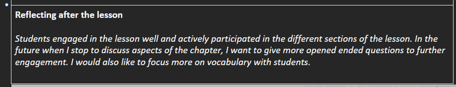
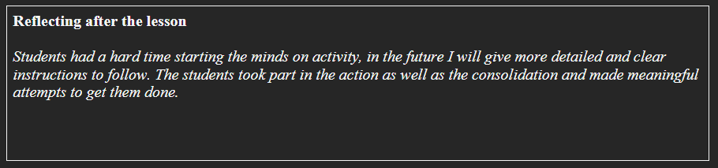

📌 personal reflections
These are informal, daily reflections based on classroom moments. Each one captures a specific lesson artifact — a photo, a student interaction, or a teaching moment — and the impact it had on my thinking and future practice.
① the thing minds‑on activity
This image captures students working through the minds‑on portion of the lesson. Some hesitation is visible at the start, but the room shows focus during action/consolidation.
This image captures students working through the minds‑on portion of the lesson. Some hesitation is visible at the start, but the room shows focus during action/consolidation.

① the thing chapter discussion & vocabulary
A snapshot during a shared chapter reading. Students are actively participating, raising ideas. The image highlights engagement and potential for deeper questioning.
A snapshot during a shared chapter reading. Students are actively participating, raising ideas. The image highlights engagement and potential for deeper questioning.

📋 formative assessment
Formal feedback from my associate teacher, captured on the official practicum form. This type of artifact provides structured, professional insights into my teaching strengths and areas for growth, based on observation and discussion.
① the thing Formative Practicum Assessment
Mid-block feedback from associate teacher. Documents strengths in planning, relationships, and next steps toward responsive teaching using student data.
Mid-block feedback from associate teacher. Documents strengths in planning, relationships, and next steps toward responsive teaching using student data.

(one formative assessment artifact currently displayed)
⬇️ each entry follows: thing · artifact · impact — organised by reflection type.